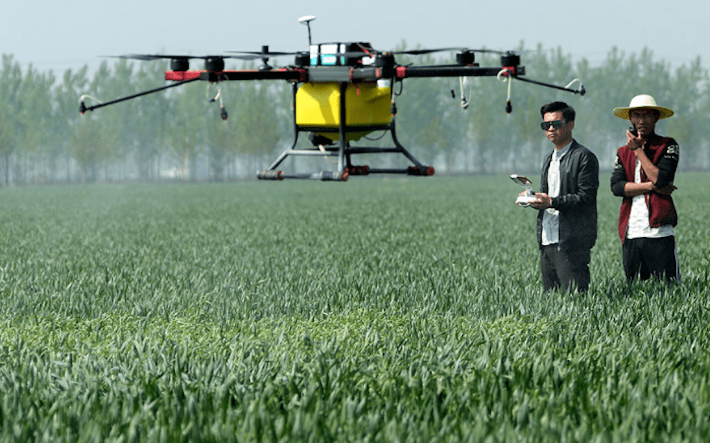
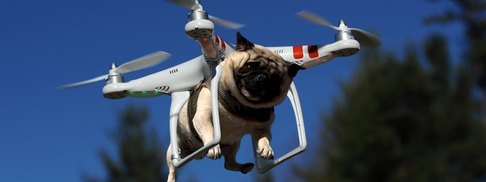
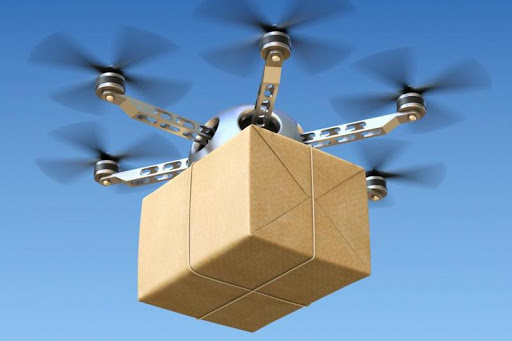

Áreas de atuação
O Eagle One atua em diversas áreas, a seguir você poderá observar alguns exemplos. Tenha em mente que os casos que criamos são bem específicos, então não se limite apenas nas opções elencadas qualquer dúvida entre em contato com a nossa equipe.
Engenharia Civil
Com os nossos drones personalizados, a visualização de pontos de risco nas obras fica muito mais fácil e garante a segurança dos trabalhadores. .
- Aprenda como usar drone na Eng. Cívil
- Se quiser saber mais, pesquise K K
Segurança Pública e Privada
Com a variedade de nossos gadgets é possível facilitar o monitoramento e aumentar a segurança, visto que nossos drones possuem dispositivos de reconhecimento facial e câmeras térmicas, além de que sua mobilidade área tornam-se muito mais eficientes que as câmeras de segurança tradicionais.
Mineração
Segurança. Tempo. Recursos. Essas são umas das vantagens do uso de drones na exploração de minas, acessando lugares inalcançáveis para nós humanos, em um tempo muito mais rápido e ainda coletando e armazenando dados significativamente mais eficiente.
Mapeamento de Área
Nossos drones são capazes de delimitar áreas, detectar o tipo de solo, a possível presença de lençóis freáticos entre outras funções.
Agricultura
Os ganhos nessa área são avassaladores. Com uma boa qualidade de imagem, agrônomos consegue detectar a presença de pragas muito mais brevemente, impendindo que ela se alastre pela colheita, além de poder realizar uma dedetização muito mais inteligente e localizada, administrando a quantidade e evitando desperdícios.
 Drones na Agricultura: tudo sobre a tecnologia que está mudando o setorHumanitária
Existem diversas pessoas que vivem em regiões de difícil acesso, e isso implica em uma entrega de suprimentos, como remédios e insumos médicos, altamente comprometida. Com os nossos drones adaptáveis de carga, a mobilidade desses produtos teria sua mobilidade facilitada, consequentemente mais vidas e famílias sendo beneficiadas.

Informações adicionais:
O que são drones?
A palavra drone possui origem inglesa e traduzindo significa “zangão”. Esse nome foi dado às famosas pequenas aeronaves que a cada dia mais têm ganhado espaço no cenário mundial. Essa tecnologia que antes era utilizada somente para fins militares, atualmente é aplicada em diversos segmentos da cadeia produtiva e até mesmo utilizada para fins pessoais e para entretenimento. As pequenas aeronaves que recebem o nome de drones nada mais são do que Veículos Aéreos Não Tripulados (VANT), proveniente do inglês Unmanned Aerial Vehicle (UAV). Para entender o que é um drone ou VANT, a melhor associação que pode ser feita são os antigos carrinhos de controle remoto. As pequenas aeronaves não tripuladas funcionam de acordo com o mesmo princípio dos brinquedos, elas são controladas através de um controle remoto que envia os comandos para a aeronave por meio de ondas de rádio. Desta forma, os drones não possuem um “piloto”, mas sim uma pessoa controlando-o de forma remota. Essas aeronaves não tripuladas surgiram na década de 60 quando a marinha dos Estados Unidos verificou a necessidade de observar e monitorar os inimigos sem colocar seus soldados em risco. Durante muitos anos o governo americano afirmou não utilizar esse tipo de tecnologia, quando em 1973 admitiu utilizar VANTs nos campos de batalha. Inicialmente os drones utilizavam câmeras para gravação e reconhecimento de território, atualmente são equipados com armas e sensores de alta precisão tendo seu uso difundido nas mais diversas áreas.
Existe diferença entre drones e VANTs?
Basicamente ambos os nomes se referem à mesma tecnologia, ou seja, as pequenas aeronaves não tripuladas. Mas de acordo com a legislação brasileira, drones e VANTs são classificados de maneiras distintas. Para entender melhor, veja a seguir:
Drones
São classificados como aeromodelos. São as aeronaves utilizadas em competições ou para entretenimento. Os drones são considerados aeronaves de intuito totalmente recreativo, desta forma são considerados pela legislação simplesmente como aeromodelos. Drones não possuem nenhuma restrição para compra e não carece que o usuário porte nenhum tipo de licença ou autorização.
VANTs
Tecnicamente os VANTs são a mesma coisa que os drones, não possuindo diferenças e seguindo os mesmos princípios, diferindo somente na aplicação. Veículo Aéreo Não Tripulado é aquele destinado ao uso comercial, ou para uso em pesquisas e experimentos. Além disso, para ser considerado um VANT é necessário que a aeronave possua alguma carga útil embarcada, como: câmeras, sensores ou até mesmo algum produto, como por exemplo, uma carta ou encomenda.
Tipos de drones
Assim como as aeronaves que possuem diferentes tipos (aviões e helicópteros), os drones também são divididos em categorias distintas. Os VANTs podem ser classificados em: multi-rotor e asa fixa.
Multi-rotor
drones na agricultura: drone multi-rotor Os drones multi-rotor são os modelos mais famosos, destaque para os quadricópteros que é tipo de VANT mais conhecido e utilizado em todo o mundo. Essas pequenas aeronaves utilizam o mesmo princípio de voo dos helicópteros, através de asas móveis, chamadas de rotores, que possuem elevadas rotações por minuto (RPM) que possibilitam que o drone possa voar. Esse modelo é o mais acessível e possui uma série de limitações. Os drones multi-rotor possuem limitações de velocidade, resistência e autonomia. Por isso, não podem ser utilizados para monitoramento de grandes áreas e atividades que carecem percorrer grandes distâncias. Por outro lado, os drones de multi-rotor são mais fáceis de serem controlados, podem ficar estáticos no ar e tirar fotos e filmar pontos fixos ou áreas menores. Os drones multi-rotor tem sido bastante utilizados para a produção de filmes, fotos aéreas e são os modelos utilizados pelo público para entretenimento. As baterias mais modernas permitem ao modelo uma autonomia de 20 a 30 minutos.
Asa fixa
drones na agricultura: drone de asa fixa Os drones de asa fixa são totalmente diferentes do modelo de multi-rotor, sendo muito parecidos com aviões. Eles geralmente possuem a asa em delta que cria a sustentação para o voo e um motor tipo hélice na parte traseira que o impulsiona o modelo para frente. Pelo fato dos drones de asa fixa precisarem de energia somente para impulsioná-los para frente e não para segurá-los no ar — como no caso do modelo de multi-rotor — são muito mais eficientes. Esse modelo consegue cobrir grandes distâncias, áreas amplas e monitorar diversos pontos de interesse. Por possuírem grande eficiência, podem utilizar tanto motores elétricos como motores de combustão — como no caso de aeronaves de grande porte e principalmente de uso militar. Os drones de asa fixa possuem uma autonomia consideravelmente maior quando comparado com o modelo de multi-rotor, existindo modelos que podem permanecer em operação de 40 minutos até incríveis 16 horas. O modelo de asa fixa é amplamente utilizado em operações militares, sendo inclusive mostrado em diversos filmes. Nos últimos anos esse modelo tem ganhado muito destaque pelo seu uso na agricultura, vigilância de grandes áreas e no setor florestal. Através do uso de sensores e câmeras de alta resolução, os drones de asa fixa têm possibilitado grandes avanços em diversas áreas.
Conclusão
Os drones ou VANTs são uma das tecnologias mais procuradas dos últimos anos nos mais diversos setores e para inúmeras aplicações. Essas pequenas aeronaves não tripuladas têm revolucionado inúmeros segmentos, proporcionado ganhos de produtividade, segurança e até mesmo redução dos custos operacionais. Além de garantir todos os benefícios apresentados para a agricultura, os drones estão sendo aplicados nos setores ambiental e florestal, auxiliando no controle e monitoramento de florestas, contagens de árvores entre diversas outras aplicações. A procura dos empresários e produtores rurais por drones tem aumentando bastante nos últimos anos. Isso se deve não somente pelos inúmeros benefícios da sua aplicação, mas também por serem mais acessíveis que algumas tecnologias que são utilizadas de forma tradicional, como por exemplo, o uso de satélites para sensoriamento remoto. Os drones têm se tornado um grande aliado das grandes plantações que buscam excelência na produção de alimentos e floresta de alta produtividade. Essa tecnologia tem apresentado resultados altamente satisfatórios para a agricultura de precisão, proporcionado um rápido ROI (Return On Investiment) e se tornado um grande diferencial de plantações que têm o foco em automação Para saber como utilizar um drone nas suas plantações entre em contato com a Pix Force e conheça um pouco mais dos nossos serviços.